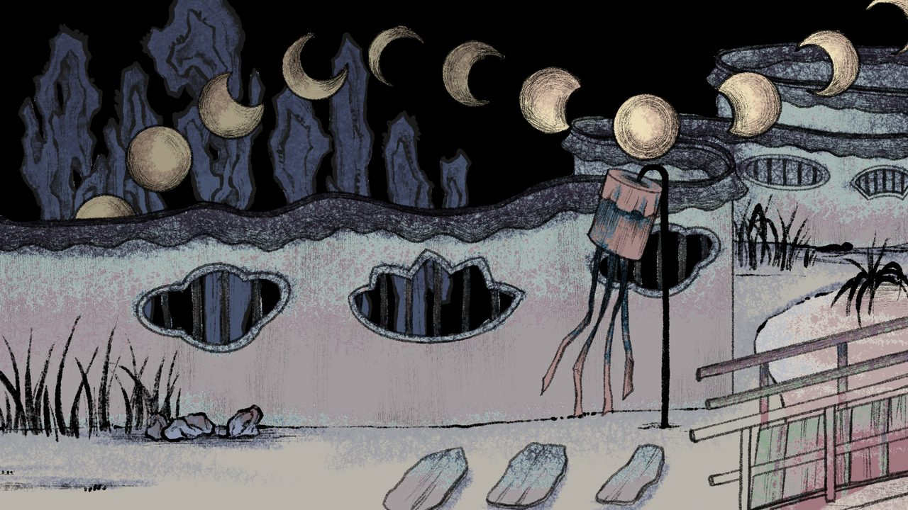

故事Story
一部反过来的《牡丹亭》The Peony Pavilion, turned around
情不知所起，一往而深。
生者可以死，死可以生。
——汤显祖《牡丹亭·题词》 Love springs from no one knows where, and runs ever deeper.
The living may die of it, and the dead may live again.
— Tang Xianzu, preface to The Peony Pavilion
在原作里，杜丽娘游园入梦，因情而死，又因情复生。《游园惊梦》把这个故事反了过来：死而复生的是柳梦梅。而杜丽娘要在杜府深宅里，一点点揭开那个时代的黑幕，然后选择自己的命运。 In the original, Du Liniang wanders into a garden, dreams, dies of love and is brought back to life by it. You Yuan Jing Meng turns the story around: it is Liu Mengmei who returns from the dead. Inside the deep courtyards of the Du household, Du Liniang slowly uncovers the darkness of her era, and then chooses her own fate.
